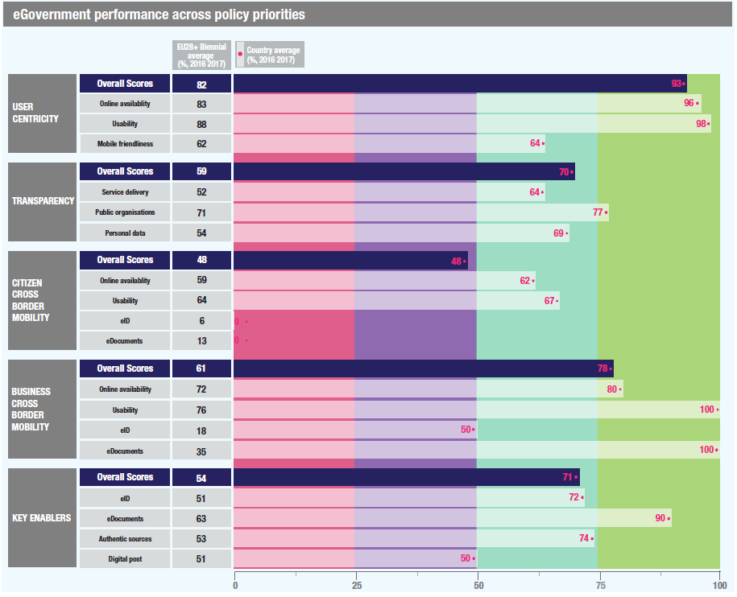

ISA2


 Table of Contents
Table of ContentsDigital Government Factsheet 2019
Portugal
ISA2
Digital Government Highlights 6
Digital Government Political Communications 7
Digital Government Legislation 12
Digital Government Governance 18
Digital Government Infrastructure 23
Digital Government Services for Citizens 35
Digital Government Services for Businesses 50
Population: 10 291 027 inhabitants (2018)
GDP at market prices: 201 605 million Euros (2018)
GDP per inhabitant in PPS (Purchasing Power Standard EU 28=100): 77 (2017)
GDP growth rate: 2.1% (2018)
Inflation rate: 1.2% (2018)
Unemployment rate: 7% (2018)
General government gross debt (Percentage of GDP): 121.5% (2018)
General government deficit/surplus (Percentage of GDP): -0.5% (2018)
Area: 92 212 km²
Capital city: Lisbon
Official EU language: Portuguese
Currency: Euro (EUR)
Source: Eurostat (last update: 15 March 2019)
The following graphs present data for the latest Digital Government Indicators for Portugal compared to the EU average. Statistical indicators in this section reflect those of Eurostat at the time the Edition is being prepared.
Percentage of individuals using the internet for interacting with public authorities in Portugal | Percentage of individuals using the internet for obtaining information from public authorities in Portugal |
Percentage of individuals using the internet for downloading official forms from public authorities in Portugal | Percentage of individuals using the internet for sending filled forms to public authorities in Portugal |
The graph below is the result of the latest eGovernment Benchmark report, which monitors the development of eGovernment in Europe, based on specific indicators. These indicators are clustered within four main top-level benchmarks:
User Centricity – indicates to what extent (information about) a service is provided online and how this is perceived.
Transparency – indicates to what extent governments are transparent regarding: i) their own responsibilities and performance, ii) the process of service delivery and iii) personal data involved.
Cross-Border Mobility – indicates to what extent EU citizens and businesses can use online services in another country.
Key Enablers – indicates the extent to which five technical pre-conditions are available online. There are: Identification (eID), Electronic documents (eDocuments), Authoritative Sources, and Digital Post. Digital Post refers to the possibility that governments communicate electronically-only with citizens or entrepreneurs through e.g. personal mailboxes or other digital mail solutions.
These top-level benchmarks are measured using a life-events (e.g. mystery shopping) approach. Eight life events are included in the overall eGovernment performance score. Four of these life events were measured in 2013, 2015 and 2017 and the other four were measured in 2012, 2014, 2016, and again in 2018. The life events measured in 2017 were Regular business operations, Moving, Owning and driving a car and Starting a small claims procedure. The life events measured in 2018 are Business start-up, Losing and finding a job, Family life and Studying.

Source: eGovernment Benchmark Report 2018 Country Factsheet
Digital Government Political Communications
Portugal signed the Digital 9 (D9) charter in November 2018, thus integrating into the network of advanced digital nations that includes Canada, Estonia, Israel, Mexico, New Zealand, South Korea, United Kingdom and Uruguay. In signing this charter, Portugal committed itself to working towards the following principles: user needs; open standards; open source; open markets; open government; connectivity; teach children to code; assisted digital and commitment to share and learn.
Digital Government Legislation
Law no. 46/2018 was adopted, which established the legal regime for the security of cyberspace, transposing Directive 2016/1148 of the European Parliament, and of the Council of 6 July 2016 on measures to ensure a common level of network and information security throughout the Union.
Digital Government Governance
In 2018, Ms. Mariana Vieira da Silva took office as the Minister of the Presidency and of Administrative Modernisation. The Minister of the Presidency and of Administrative Modernisation is responsible for the modernisation of public administration and digital government.
Digital Government Infrastructure
The ePortugal portal, launched in February 2019, replaced the Citizen Portal as the main channel for accessing digital services offered by the public administration. It is the central repository for all services dedicated to citizens and companies, and in addition a directory of addresses, websites and mobile applications of the Public Administration. ePortugal is dynamic and adaptable to each user, offering several customisation options and a reserved area that allows each user to access different information regarding their relationship with the Public Administration. It has developed a strong focus on accessibility and usability, providing innovative support mechanisms such as the chatbot SIGMA and the possibility of taking digital queue tickets for onsite public services through the Citizen Map.
Digital Government Services for Citizens and Businesses
The Mobile Medical Electronic Prescription (PEM Mobile), launched in February 2019 by the Shared Services of the Ministry of Health (SPMS), is a mobile application that allows physicians to perform medical prescriptions using their smartphones. The PEM Mobile is a solution for in-home consultations or when the physician is away from the patient, allowing health professionals to issue medical prescriptions in a secure way.
The Citizen Map – which provides geo-location and information for all Portuguese public services - is now available at mapa.eportugal.gov.pt, and a new standalone app will soon be launched.
The new Social Security + Close mobile app launched in December 2018 provides an easier and simpler way for Citizens and Companies to access Social Security services wherever they are and whenever they want. This app is available for both Android and iOS and allows users to:
ICT Strategy 2020 – Public Administration Digital Transformation Strategy
The ICT Strategy 2020, devised by the Council for Information and Communication Technologies in Public Administration (CTIC), approved in 2017 by the Resolution of the Council of Ministers nº 108/2017 of March 2, will guide the digital transformation of the Portuguese Public Administration until the year 2020. This Strategy comprises three main axes:
These three axles foresee a total of 12 measures and 37 actions, that include activities to implement in a cross-sectoral and distributed way by the different government areas.
The ICT Strategy was fully reviewed in 2018 to reflect the revision of the ICT sectorial plans that also occurred in 2018, thus showing the progress made on the implementation of the various cross-sectoral and sectoral measures and the related (and updated) data on investments, savings and economic and social benefits.
The abovementioned CTIC, created in 2016 by the Council of Ministers’ Resolution no. 33/2016, of June 3, is the coordination structure responsible for developing and operationalising the ICT Strategy and the overall action plan for ICT in the Portuguese Public Administration.
The CTIC responds directly to the Prime Minister, who delegated this attribution to the Minister of the Presidency and of Administrative Modernisation, and its Technical Committee (which includes a representative for each Ministry) is chaired by the Administrative Modernization Agency’s (AMA) CEO, thus entitling that entity with a cross-sectorial management role in the Portuguese eGovernment policy domain – always with the guidance of the Minister of the Presidency and of Administrative Modernisation.
The CTIC has the following objectives:
Simplex+ Programme
SIMPLEX+ is a collaborative and nationwide simplification program launched by the Portuguese Government to co-create new online public services, optimise existing ones and de-bureaucratise the relationship between public institutions and civil society.
The overall coordination of the SIMPLEX+ Programme is assured by the Minister of the Presidency and of Administrative Modernisation, while AMA’s technical support (encompassing the design, management and monitoring of SIMPLEX+) is provided under the political tutelage of the Secretary of State Assistant and of Administrative Modernisation.
The potential of ICTs to promote administrative simplification and to facilitate the State’s interaction with both citizens and businesses is acknowledged by most of the measures of the SIMPLEX+ programme, which mix different approaches and solutions to achieve the objectives of:
The development of this national de-bureaucratisation programme encompasses an innovative public consultation devised to involve citizens, businesses and public administration in the co-creation of simplification measures. The 2018 edition of the SIMPLEX+ Programme includes 175 additional measures for facilitating the State’s interaction with both citizens and businesses. These measures were devised in collaboration with public servants, citizens and business, continuing and further deepening the co-creative facet of the SIMPLEX+ initiative.
The monitoring of these measures is carried out through an electronic platform transverse to all areas of governance and accessible by the focal points of the SIMPLEX Network, which is composed by one representative from each ministry whose role is to identify the necessary tasks for the implementation of the different measures and to constantly promote and update its execution rate (all this info is synthesised in standardised periodic implementation reports).
According to an external evaluation published in 2017, 13 measures of the SIMPLEX+ 2016 represented, alone, "savings of over EUR 620 million" and "had an impact on the economy of over EUR 1 thousand millions". The same assessment referred that it freed the workforce by more than 300 civil servants, allowing their allocation to higher-value, more customer-centric services.
Examples of SIMPLEX+ 2018 Measures include:
In 2019, SIMPLEX+ will evolve to iSIMPLEX, focusing on innovative measures of a more technological and impactful nature in behavioral economics, enabling citizens and businesses to interact “only once” with the State, share and reuse resources and benefit from emerging technologies such as Artificial intelligence.
Portugal INCoDe.2030
Portugal INCoDe.2030, launched in April 2017, is an inter-ministerial action that brings together the areas of Administrative Modernisation, Science, Technology and Higher Education, Education, Labour, Planning and Infrastructures and Economy, and aims to strengthen the basic skills of the Portuguese population in ICT, preparing it for emerging and digitally-based employment opportunities.
This initiative is structured around five main axes: Inclusion, Education, Qualification, Specialisation and Research. It aggregates a variety of measures to be implemented by different governmental bodies in collaboration with the private sector, academia and civil society. Examples of ongoing activities include a training program for Chief Data Officers; the signing of cooperation protocols between public entities to qualify the specialised human resources of each institution; launching a EUR 3.5 million project competition to support the development of partnerships between Public Administration and R&D institutions in the fields of Artificial Intelligence and Data Science; and the development of the Portuguese Strategies for Artificial Intelligence (AI Portugal 2030) and for Advanced Computing (Advanced Computing Portugal 2030).
LabX
The Experimentation Laboratory of the Public Administration (LabX) was created in 2017 as an organic unit of AMA to design and test, along with all the interested parties involved, new services and administrative procedures, more adequate to the needs of citizens, businesses and public services. It envisaged the development of a culture of experimentation in the Portuguese Public Administration to anticipate, accelerate and generate innovation so that the public administration does more and better.
With a multidisciplinary team that combines service designers, public servants and social scientists, LabX co-created solutions with citizens, public officials and policy makers, to engage these stakeholders and harness their specific insights and contributions. Accordingly, the LabX methodology for conception and development of efficient and user-centric public services has been guided by the following service design principles:
LabX projects include, for example, the Public Expenditure Roadmap (to simplify and eliminate redundant tasks to improve the control and the quality of public spending); the Death and Bereavement Desk (to facilitate all bureaucracies with which relatives interact after the death of a family member); the Employment One-Stop-Shop Online /IEFP Online (devised by the Ministry of Labour, Solidarity and Social Security to concentrate in a single digital platform all interactions between public services, unemployed citizens and potential employers); and Fiscal Citizenship 2.0 (developed jointly with the Tax and Customs Authority to improve that entity’s communication with its different end-users, by sharing fiscal information in a more simplified and concise manner).
LabX paved the way for Portugal’s participation, since November 2017, in the States of Change group, a group of countries that stand out as ‘international champions’ of innovation in the public sector.
National Action Plan for Open Administration.
Portugal published, in December 2018, its first National Action Plan for Open Administration, which was developed by the National Network for Open Administration through a process of co-creation that involved the public sector and civil society, including an online public consultation held between 19 November 2018, and 3 December 2018.
This plan included eight commitments to promote transparency and access to public sector information, foster public participation and boost the use of public open data. It will be implemented until August 2020 by the National Network for Open Administration, in collaboration with other relevant stakeholders of the public sector and civil society when needed. The National Action Plan for Open Administration is available on the OGP Portugal website and also published on the Open Government Partnership website.
No political communication was adopted in this field to date.
National Cyberspace Security Strategy 2019-2023
The National Cyberspace Security Strategy 2019-2023 (Resolution of the Council of Ministers No. 92/2019), published on 5 June 2019, aims to ensure the protection and defence of critical infrastructures and vital information services, and to promote the use of free, secure and efficient use of cyberspace by citizens, companies and public and private entities.
This Strategy was developed by the High Council of Cyberspace Security, taking into account the digital evolution that has occurred since the approval of the first version in 2016.
No political communication was adopted in this field to date.
No political communication was adopted in this field to date.
No political communication was adopted in this field to date.
No political communication was adopted in this field to date.
National Strategy for Artificial Intelligence: AI Portugal 2030
The National Strategy for Artificial Intelligence was devised in the scope of the National Digital Competences Initiative e.2030 - Portugal INCoDe.2030 (Resolution of the Council of Ministers n.º26/2018, 15 February), an inter-ministerial action that brings together the areas of Administrative Modernisation, Science, Technology and Higher Education, Education, Labour, Planning and Infrastructures and Economy, and aims to strengthen the basic skills of the Portuguese population in ICT, preparing it for emerging and digital-based employment opportunities. The fifth (out of five) axis of this initiative specifically targets Research (‘providing the conditions for the production of new knowledge and an active participation in international R&D networks and programmes’).
This axis encompasses, in addition to the AI Portugal 2030, other initiatives such as a funding Program in Data Science and Artificial Intelligence in Public Administration, first launched in February 2018, and which promotes public tenders to support new R&D projects involving partnerships between the Public Administration and scientific institutions.
ICT strategy 2020 and emerging technologies
The innovation and competitiveness axis of the ICT 2020 Strategy explicitly mentions the concern of preparing for the future, looking at what science and technology offer and the possibilities of innovation in the Public Administration. One example is the use of data analytics or artificial intelligence as an automatic means for the handling of data (some non-personal and available via the internet of things) in order to prevent problems and/or anticipate needs. Processing all information given in this way allows, for example, to provide citizens with improved services using fully automatic customer care systems in natural language or in disease prevention. Another possibility is the use of augmented reality in the physical design of new services, e.g. by using the citizen service area prototyping. It is also possible to use some technologies, like blockchain, to ensure information and personal data protection and integrity. These are challenges that will change the way we work and configure products and services.
Unique digital address and public service of electronic notifications
Decree-Law no. 93/2017, of 1 August, which created the unique digital address, established the public service of electronic notifications associated to the unique digital address. It regulated the sending and receiving of electronic notifications through the public service of electronic notifications associated with the digital single address, as a special regime.
TIC APP – Centre for Digital Competences of the Public Administration
The Resolution of the Council of Ministers no. 22/2018, established the TicAPP or Public Administration Digital Competencies Centre as a specialised competence centre in the field of digital transformation of the Public Administration. It operates within the Administrative Modernisation Agency to support different government areas in the process of digital transformation.
Decree-Law on Digital Services
The Decree-Law 74/2014, of 13 May, revised by Decree-Law no. 105/2017 of 29 August, established the rule of digital provision of public services by default. It enshrined assisted digital attendance as an indispensable complement via a Citizen Spot network, where those who cannot, will not, or do not know how to use digital tools, can benefit from the support and guidance of a public servant/digital mediator: the objective is to give all citizens the possibility to access digital services.
Decree-Law on Administrative Modernisation
The Decree-Law no. 135/ 99, reviewed by the Decree-Law no. 73/2014, approved in May 2014, established important administrative modernisation measures, including the ‘once only’ principle, according to which the citizen must not be obliged to give the Public Administration the same document twice. The ‘once only’ principle leads to several standards, particularly relating to administrative communications.
Decree-Law on the Zero Licensing
The Portuguese Zero Licensing programme is one of the most representative initiatives of the eGovernment agenda. Its main objective is to considerably simplify the licensing procedures necessary to carry out several economic activities by reducing red tape through an electronic point of single contact. One of the first objectives was achieved in April 2011, following the approval of Decree-Law no. 48/2011, which saw a significant reduction in the required licences. It was further strengthened with the approval of Decree-Law nº10/2015, which ruled the entire practice regarding food and beverage establishments and also trade and services establishments.
Decree-Law on the Responsible Industry Regime
Also known as the Zero Licensing for industry, the Decree-Law no. 169/2012, which was approved in August 2012, regulates the practice of industrial activity. This Decree-Law was revoked by Decree-Law no. 73/2015, in May 2015.
Law of Access to Administrative Documents
Article 268 no. 2 of the Portuguese Constitution established the fundamental right of access to administrative archives and registries, except for information related to state security, criminal investigation and personal privacy.
In addition, Law no. 26/2016 of August 2016 regulated access to administrative and environmental data, and re-use of administrative documents, transposing the European Parliament and Council Directive 2003/4/EC on public access to environmental information, and European Parliament and Council Directive 2003/98/EC regarding the re-use of public sector information. One of its highlights was the implementation of the principle of active dissemination of information, in which entities subject to the law make available a set of updated information on their websites without the citizen having to ask for it.
Law on the accessibility of websites and mobile applications of public sector bodies
Decree-Law no. 83/2018 of 19 October 2018, on the accessibility of websites and mobile applications of public sector bodies transposed Directive (EU) 2016/2102 of the European Parliament, and of the Council of 26 October 2016, on the accessibility of the websites and mobile applications of public sector bodies into the internal legal order.
Law on Citizen Card
Law no. 7/2007 of 5 February 2007, created the Citizen Card and regulated its issuance, replacement, use and cancellation. Article 18 outlined the provisions for digital certificates, an electronic document which uses a digital signature. The eSignature based on a qualified certificate is optional; it can only be activated and used by citizens over the age of 16, and no eSignature based on a related qualified certificate can be activated if a holder requesting a Citizen Card is deemed unsuitable.
Law nº32/2017 of June 2017 introduced significant changes to the Citizen Card, in particular the integration of the Professional Attributes Certification System, which allows citizens to use their national eID card to digitally sign not only as citizens, but also as a proven professional of a particular and recognised career (e.g. as an Engineer or as a Physician).
Decree-Law on Electronic Signatures
The Decree-Law on Electronic Signatures no. 62 of 3 April 2003 aligned the legal regime for digital signatures established in a previous Decree-Law (Decree-Law no. 290-D/99) to Directive 1999/93/EC on a Community framework for electronic signatures. The Decree-Law no. 165/2004, of 6 July and the Regulatory Decree no. 25/2004 of 15 July constituted further legislation in this area.
eSignature based on a qualified certificate
The provisions of Decree-Law no. 290-D/99, Decree-Law no. 165/2004, Decree-Law no. 62/2003 and Decree-Law no. 116-A/2006 applied to an eSignature based on a qualified certificate, while these certificates were subject to the applicable rules and regulations pertaining to the State Electronic Certification System (SECS).
Law on the Digital Mobile Key
Law no. 37/2014, of 26 June 2014, established an alternative and voluntary authentication system of citizens in portals and websites of the Public Administration, the Digital Mobile Key.
The introduction of Law no. 32/2017, of 26 June 2017, allowed citizens to digitally sign documents by entering a personal identification code, or a mobile phone number, followed by a permanent password and a unique, temporary and automatically generated numeric code that they receive by SMS or via a specific smartphone app.
More recently, Law no. 71/2018 (which approves the State Budget for 2019, Article 331 thereof amends the Law No. 37/2014, of June 26) assured citizens the portability of their personal data (in compliance with the GDPR), by granting:
Access to the data contained in their identification documents or issued by public entities through a mobile application made available by the Administrative Modernisation Agency;
Through secure authentication, access data contained in the databases of Public Administration bodies to be made available at authentication.gov;
Also worth mentioning: Administrative Rule No. 73/2018, which defines the terms and conditions of use of the Professional Attributes Certification System (SCAP) for the certification of professional, business and public attributes through the Citizen Card and Digital Mobile Key, and Administrative Rule No. 77/2018, which regulated the use of the Digital Mobile Key for digitally signing documents.
Law on the use of Open Standards in Public Administration Information Systems
Law no. 36/2011, approved in June 2011, established the use of open standards in the information systems of public administrations. It was considered a fundamental step for the sovereignty of and the control over documents that public institutions own, thus reducing the dependence on businesses and external applications that can properly interpret information stored electronically.
Law on the Protection of Personal Data
Law no. 41/2004, of 18 August 2004, transposed into national law Directive 2002/58/EC concerning the processing of personal data and the protection of privacy in the electronic communications sector, except for Article 13 which concerned unsolicited communications. This legislation applied to the processing of personal data within the context of publicly available electronic communications services and networks, while complementing the provisions of Law no. 67/98 (Law on the Protection of Personal Data). Its provisions ensured protection of the legitimate interests of subscribers who were legal entities to the extent that such protection was consistent with their nature.
On 8 August 2019 the publishing of Law 58/2019 established the application of the Regulation (EU) 2016/679 of the European Parliament and the Council of 27 April 2016, on the protection of individuals with regard to the processing of personal data and to the free movement of such data (GDPR) in Portugal, thus repealing Law nº 67/98.
Cybersecurity legislation
Law no. 46/2018 was adopted. It established the legal regime for the security of cyberspace, transposing Directive 2016/1148 of the European Parliament and of the Council of 6 July 2016, on measures to ensure a common level of network and information security throughout the Union.
Civil Registry
The Civil Registry was first regulated by Decree Law no. 131/95. Since then, several modifications have been made. This law prescribed the civil facts that must be registered, identified the civil registries and their mandates, and described the archiving procedures.
Commercial Registry
The Commercial Registry is regulated by Decree Law no. 403/86. Several amendments have been made to this legislation. This law established the different types of businesses, identified the authorities responsible for the registration, and described the registration process, among others.
Land registry
The Land Registry is regulated by Decree Law no. 224/84. This legal document has been revised multiple times. It encompasses the facts that must be registered and a description of the registration process.
Vehicle Registry
The Vehicle Registry is regulated by the Decree Law no. 54/75. After several amendments, this legislation describes a complex registration system for vehicles.
Sharing information between national commercial registry and EU Member States
Decree-Law No. 24/2019 established rules applicable to the sharing of information between the national commercial registry and the commercial registries of other European Union’s Member States in accordance with Directive 2012/17/EU.
Decree-Law on eProcurement
Public Procurement Code (PPC) Decree-Law no. 18/2008 published on 29 January, and revised by the Decree-Law no. 111/2017, of 27 August, transposed these EU Public Procurement Directives:
eProcurement provisions are based on three major innovations:
Decree-Law no. 72/2018 required the creation of the National Suppliers Portal of the State, whose purpose was to simplify and expedite the procedures for verification and verification of the non-existence of impediments to contracting, as provided for in the Code of Public Contracts.
eInvoicing legislation
In Portugal, the responsible entity for eInvoicing is the Ministry of Finance. The legislation in this field makes reference to the Public Procurement Code (Código dos Contratos Públicos), which was reviewed in September 2017 (by the Decree-Law nº 111-B/2017, of August 31) in order to implement Directive 2014/55/EU.
At the moment there are two platforms in use for procurement: the Portal BASE, an online platform that enables the processing of contracts in the context of public procurement both in the pre- and post-award processes; and the Plataforma Eletrónica de Compras, a central online platform that manages public eProcurement processes, including eInvoicing, in the context of the framework contracts established by eSPap.
Decree-Law no. 123/2018 defined the governance model for the implementation of electronic invoicing in public contracts.
Decree-Law no. 28/2019 regulated the obligations related to the processing of invoices and other fiscally relevant documents, as well as the maintenance obligations of books, records and respective supporting documents that apply to VAT taxable persons.
Portugal Participatory Budget
Article 3 of the Law that approved the State Budget for 2018 anticipated that, ‘the adoption of a Participatory Budget in the Budget of the State, foresees the allocation of an annual amount to projects proposed and chosen by the citizens to finance and carry out in certain areas of Government and State Administration, giving priority to measures promoting the quality of life.’
Through the Resolution of the Council of Ministers no. 195/2017, of 22 December 2017, the technical principles, methodology and rules for the operationalisation of the Portugal Participatory Budget (OPP), for the year 2018, were approved, establishing that voting for the projects should be carried out through the electronic platform of the OPP or through free SMS.
Education legislations
Executive Order no. 6/2018, of 12 April 2018, established registration procedures in schools, their renewal and the norms to observe concerning the distribution of children and pupils. It established the digital channel as the preferential vehicle for the registration of pupils.
Decree-Law no. 66/2018 of 16 August 2018, approved the legal regime for the recognition of academic degrees and diplomas of higher education awarded by foreign higher education institutions. It established that the recognition of foreign degrees and diplomas of foreign higher education is registered through an electronic platform.
Decree-Law no. 55/2018, of 6 July 2018, established the curriculum for primary and secondary education and the guiding principles of learning assessment. In line with the priorities of simplification and dematerialisation of Public Administration, it foresaw that the models of certificates and diplomas of the various educational and training offerings should be issued in electronic format by schools.
Code of Criminal Procedure
Law No. 1/2018 of 29 January 2018, amended the Code of Criminal Procedure. The amendment allowed for making notifications to legal representatives by electronic means.
Foreign languages in civil registry
Decree-Law No. 51/2018 of 25 June 2018, ensured that necessary documents to register in the civil registry can be written in foreign languages. To apply for such registration, applicants must make an appointment online.
Online certificate for organisations
Decree-Law No. 52/2018 of 25 June 2018, prepared the creation of online certificates for organisations. These certificates allow them to be found on the constantly updated data on the Central Registry of Organisations through electronic search.
Resolution of the Council of Ministers nº 91/2012
The Resolution of the Council of Ministers no. 91/2012, of 8 November 2012, established the National Digital Interoperability Regulation and the standards that can be used to provide interoperability in the information systems of public administrations. It was revised by the Ministers Council Resolution no. 2/2018, of 5 January 2018.
Resolution of Council of Ministers on the Interoperability Platform for the Public Administration (iAP)
The Resolution of the Council of Ministers 42/2015, of 19 June 2015, foresaw the preferential adoption of the Interoperability Platform for the Public Administration (iAP) as the primary means of exchanging information among departments and entities of Public Administration.
Resolution of the Council of Ministers no. 26/2018
The Resolution of the Council of Ministers no. 26/2018 approved the National Digital Competences Initiative e.2030 - Portugal INCoDe.2030. The Portugal INCoDe.2030, launched in April 2017, was an inter-ministerial action that brought together the areas of Administrative Modernisation, Science, Technology and Higher Education, Education, Labour, Planning and Infrastructures and Economy. It hoped to strengthen the basic skills of the Portuguese population in ICT, preparing them for the emerging digital-based employment opportunities. This initiative comprised five axes: Inclusion, Education, Qualification, Specialisation and Research.
Minister of the Presidency and of Administrative Modernisation
The Minister of the Presidency and of Administrative Modernisation is responsible for the modernisation of public administration and digital government.
Mariana Vieira da Silva Minister of the Presidency and of Administrative Modernisation Contact details: Presidency of the Council of Ministers Rua Prof. Gomes Teixeira 1350-265 Lisbon Tel.: +351 21 3 927 600 Fax: +351 21 3 927 860 Email: gabinete.mpma@mpma.gov.pt Source: http://www.portugal.gov.pt/ |
Secretary of State Assistant and of Administrative Modernisation
The Secretary of State Assistant and of Administrative Modernisation is responsible for the modernisation of public administration and digital government.
Luís Goes Pinheiro Secretary of State Assistant and of Administrative Modernisation Contact details: Presidency of the Council of Ministers Rua Prof. Gomes Teixeira 1350-265 Lisbon Tel.: +351 21 3 927 600 Fax: +351 21 3 927 312 E-mail: gabinete.seama@mpma.gov.pt Source: http://www.portugal.gov.pt/ |
Administrative Modernisation Agency (AMA)
Created in 2007, AMA follows the Presidency of the Council of Ministers responsibilities in the areas of digital government, modernisation and administrative simplification, under the superintendence and tutelage of the Secretary of State Assistant and for Administrative Modernisation.
AMA’s activity is divided in three major pillars: Digital Transformation, Public Services Delivery (both physical and digital) and Public Participation.
AMA leads areas such as ICT strategy and governance, electronic identification (eID), interoperability, open data, and other building blocks of the digital government in Portugal.
Sara Carrasqueiro Member of the Board of Directors, Administrative Modernisation Agency (AMA) Contact details: Administrative Modernisation Agency Rua de Santa Marta, 55 1150-298 Lisbon Tel.: +351 21 723 12 00 Fax: +351 21 723 12 20 E-mail: ama@ama.pt Source: http://www.ama.pt |
Administrative Modernisation Agency (AMA)
AMA implements initiatives to modernise and simplify public administration, focusing on digital transformation, service delivery and public participation.
Individual Government Ministries and Agencies
Individual Government Ministries and Agencies carry out projects within the framework of their competences.
Management Centre for the Electronic Government Network (CEGER)
CEGER, under the Prime Minister’s Office, provides support to government bodies in the field of IT. It is responsible for the management of all the technological infrastructure of the government network, including maintenance of the Data Processing Centre, technological equipment, systems and the electronic communication network. In addition, CEGER focuses on electronic security and on advanced systems in support of government decision-making. It also acts as the certification manager for the Electronic Certification System of the State - management of Public Keys (SCEE). It is the responsible entity for registration of GOV.PT Internet sub-domains.
| Tito Carlos Soares Vieira Director, CEGER - Management Centre for the Electronic Government Network Contact details: CEGER Rua Almeida Brandão, 7 1200-602 Lisbon Tel.: (+351) 213 923 400 Fax: (+351) 213 923 499 Email: info@ceger.gov.pt Source: http://www.ceger.gov.pt/ |
Entity for Shared Services in Public Administration (eSPap)
The Government Shared Services Entity (eSPap) aims to ensure the development and provision of public services, as well as to design, manage and evaluate the national procurement system and ensure the management of the PVE (State Vehicle Park), supporting the definition of strategic policies of the Ministry of Finance in the area of information and communication technologies (ICT). It also ensures the planning, design, execution and evaluation of the initiatives of digitalisation of the respective services and organisations.
César Pestana President, eSPap – Government Shared Services Entity Contact details: eSPap Av. Leite de Vasconcelos, 2, Alfragide 2614-502 AMADORA Tel.: +351 214 723 100 Fax: +351 214 723 103 E-mail: cc@espap.pt Source: https://www.espap.pt/ |
Institute of Registrars and Notaries (IRN) / Ministry of Justice
Base Registries are coordinated at the national level by the Institute of Registrars and Notaries (IRN), a public organisation integrated in the indirect administration of the State (particularly under the Ministry of Justice). IRN’s website lists the services available to citizens and businesses, including civil registry, civil identification, vehicle registry, land registry and or business registry. As part of its mission, IRN makes available data from base registries to public administration entities (the Interoperability Platform of the Public Administration is already connected to the base registries of Social Security, Tax and Customs Authority, Health, and Justice).
The IRN is responsible for the following base registries:
Court of Auditors
The Portuguese Court of Auditors is in charge of auditing public funds, public revenue and expenditure, as well as public assets, with a view to ensuring that administration of these resources complies with the law and principles of financial responsibility.
National Commission for Data Protection
The National Commission for Data Protection is an independent body with powers of authority that extend throughout the country. It supervises and monitors compliance with the laws and regulations in the area of personal data protection, with strict respect for the human rights and the fundamental freedoms and guarantees enshrined in the Constitution and the law.
Minister of the Presidency and of Administrative Modernisation
The Minister of the Presidency and of Administrative Modernisation is responsible for the modernisation of public administration and eGovernment.
Secretary of State Assistant and of Administrative Modernisation
The Secretary of State Assistant and of Administrative Modernisation is responsible for the modernisation of public administration and eGovernment.
Minister of Home Affairs and Secretary of State of Local Administration
The Minister of Home Affairs is currently responsible for formulating, implementing and evaluating a comprehensive and coordinated policy in concerns to local government, through the Secretary of State of Local Administration.
Administrative Modernisation Agency (AMA)
AMA coordinates programmes of administrative modernisation that involve, via a very active model, most of the municipalities with regards to their implementation at the regional and local level. Among several initiatives, highlight for areas such as co-financing (SAMA), licensing (Zero Licensing and Industrial Licensing), Citizen Spots (multiservice physical desks for assisted digital service delivery, in partnership with municipalities). Furthermore, the Common Knowledge Network electronic platform works as an enabler.
Regions and Municipalities
Regions and Municipalities are in charge of related policies/strategies within the framework of their competences.
Directorate-General of Local Administrations (DGAL)
The DGAL is a service integrated in the Ministry of Home Affairs, whose mission is to design, study, coordinate and implement measures to support local administrations and to strengthen cooperation between the latter and the central administration. Its tasks include, for example, the design and development of information systems in the areas of financial, patrimonial, administrative and HR management.
Regions and Municipalities & AMA
Regions and Municipalities carry out projects within their competences. Furthermore, AMA not only coordinates, but also plays an active part in the implementation of several initiatives such as licensing (Zero Licensing and Industrial Licensing) and public services delivery Citizen Shops and Citizen Spots (One-Stop-Shops with a stronger role of municipalities), together with regional/local entities. The Common Knowledge Network electronic platform works as an enabler.
National Association of Portuguese Municipalities (ANMP)
The ANMP is the representative body of the Portuguese Municipalities. It promotes their interests and provides support services in various areas, including ICT and public management.
No responsible organisations were reported to date.
No responsible organisations were reported to date.
No responsible organisations were reported to date.
Government PortalThe Government Portal is the institutional website of the Portuguese Government, providing information on matters such as the Government Program, the Government composition, diverse documentation (e.g., political communications) or ongoing public consultations, as well as generic information about Portugal. ePortugal portal
The ePortugal portal, launched in February 2019, replaced the Citizen Portal as the main channel for accessing digital services of the public administration, adding in the same place all the services dedicated to citizens and companies and a directory of addresses, websites and mobile applications.
The ePortugal portal is dynamic and adaptable for individual users, offering several customisation options and a reserved area that allows them to access different information regarding their relationship with the Public Administration. Likewise, the portal was developed with a focus on accessibility and usability, adapting to any type of device and presenting a simpler and clearer language.
It also facilitates the interaction between citizens/companies and the State, providing innovative support mechanisms such as the chatbot SIGMA or the possibility of taking digital queue tickets for onsite public services through the Citizen Map.
The Citizen Map, which provides geo-location and information for all Portuguese public services, is another relevant feature, available at mapa.eportugal.gov.pt (a standalone app will soon be launched).
Open Data Portal (Dados.gov)
Following international practices in the area (e.g. the US or the UK Data.Gov projects), the Administrative Modernisation Agency is committed to the development of a wide and open platform containing all kinds of data from public bodies. The Dados.gov Portal makes available to citizens an extensive range of information from very diverse areas.
The objective of this policy - keeping in mind the right of any citizen to consult public administration information - is to democratise that access by facilitating the means to obtain it.
Dados.gov web-portal was relaunched in May 2018 as Dados.gov+, replacing its previous 2012 version. Developed under the SIMPLEX+ Programme, this new version was designed to conform to the best international practices in the field, and incorporate innovative solutions in terms of user experience, content structure, data integration and user licenses.
Managed by AMA and available in open source, dados.gov was based on the French UDATA platform, which was developed by ETALAB, and already has more than 2030 datasets. It’s free and open to all users that want to access data, but also to citizens and organisations that wish to make data of public interest available. All they need to do is register, receive their API key, and characterise the dataset to upload. Each dataset can have more than one associated resource and can be published in different and multiple formats, which is one of the features enabling data reuse. It’s also possible to index datasets, by introducing an URL referring to the origin of the data, which is ideal for entities that already have the information available in their own platforms, like the partilha.justiça.gov.pt, from the Justice Ministry, or the Lisboa Aberta portal, from the Lisbon city hall. In case the supplying entity already possesses its own data portal, the publishing process can also be made through data harvest, thus collecting the data in a regular and automated way.
OGP Portugal
The OGP Portugal website was developed as part of the Portuguese participation in the Open Government Partnership, to centralize all information about the process and to foster public participation, collecting contributions from citizens and ensuring their feedback. This portal has been available since October 2018, and it is also highlighted in the "Transparency" area of the ePortugal portal, with the objective of promoting its dissemination and visibility.
Tax and Customs Authority Portal (portaldasfinancas.gov)
The Ministry of Finance makes available to citizens and companies a web portal allowing for tax submission and fiscal situation consultation, among a wide range of digital services. Users can consult their tax files, statistics and conduct simulations.
Advanced functionalities were recently integrated into the system allowing for enhanced usability, the most notable being the automated income tax declaration. Available since 2017 as a Simplex+ measure, this feature automatically prefills the citizen’s income statement with all relevant data conforming to data protection regulations; the declaration receipts and the notification of the final tax calculation can be confirmed electronically.
The portadaslfinancas.gov allows secure authentication via the Citizen Card and the Digital Mobile Key, and a complimentary app was made available in 2018 to facilitate the payment of taxes and the consultation of the citizen’s fiscal status.
National Health System
Available since 2016, this platform provides access to a wide range of information and services online, made available by the institutions that integrate the Portuguese National Health System and other institutions of the Ministry of Health. The portal allows, among other functions:
Consultation/download of diverse health indicators;
Accessing geo-referenced information about health providers;
Making online medical appointments and requesting renewal of medical prescriptions;
Accessing didactic materials on Health Literacy.
The National Health System Portal includes the National Health System Transparency Portal, which centralises the data produced by the health care entities in a digital and accessible platform, so that this information can be analysed and reused without any restriction by the general population.
Social Security Portal - Direct Social Security
Via the Direct Social Security Portal, citizens can access their Social Security data and perform a wide range of services from submitting requests for unemployment benefits, child allowances, leaves to payments, while enjoying and having access to the information they need regarding their rights and duties in the social security domains. Authentication via Citizen Card (eID) is available and the platform presents lots of information already prefilled, based on back office automation and interconnection with other public organisations.
Justice portal
The Justica.gov.pt, launched by the Ministry of Justice in 2017, offers a wide catalogue of services related to the area of Justice, including courts, registries and notary, reintegration and prison services and industrial property. The platform congregates in a single website information about the judicial services in a clearer and more accessible language (all contents are written in ‘plain Portuguese’ and can be easily searched by using a simple interface). The platform represents a watershed moment in how the citizen and companies, and their agents, interact with the various services in the justice sector.
Closer Justice (Justiça + Próxima)
This portal fosters citizens’ participation regarding ideas, initiatives and projects to improve justice in Portugal. It intends to be a participatory tool, also giving access to various information in the area of Justice.
The Closer Justice programme hopes to increase transparency and trust in the justice institutions acting through four fundamental pillars: (i) enhancing efficiency and strengthening justice sector management through simplification and dematerialisation of procedures and the use of interoperable technologies; (ii) innovation, by modernising justice; (iii) proximity, pursuing the approach to citizens, by offering clear, transparent and accountable information; and (iv) humanisation, by valuing tangible and intangible resources.
In this context, technology stands out as a pivotal tool for engaging stakeholders and promoting a ‘digital by default’ principle for courts and other justice stakeholders, with a comprehensive digitalisation and modernisation package consisting of more than 175 measures (new measures are continuously added to the plan) and a total budget of EUR 42 million.
CITIUS
The CITIUS service enables electronic submission of documents for use in court cases. Lawyers can present evidence and documents to the courts, check their distribution, look up cases and keep track of fees electronically. For civil cases and injunctions, most correspondence can be conducted electronically. Sets of copies and duplicates are no longer needed. The system is secure in that the use of personal, non-transferable electronic certificates is required.
Electronic Yellow Book
The Electronic Yellow Book, launched as a Simplex+ initiative, allows everyone to leave a complaint, a suggestion, or write a compliment, regarding the public administration and its services, namely the digital ones.
Portal REA
Launched in December 2016, the State of the Environment portal (portal REA) contains online information about environmental indicators. Developed and managed by the Portuguese Environment Agency, this platform includes information and analysis for a wide range of end-users and is expected to serve as a reference for consultation on key indicators and environmental trends in Portugal. The REA portal aggregates a diverse number of indicators on the state of the environment, presented in 49 thematic sheets that are distributed in eight environmental domains: Economy and Environment, Energy and Climate, Transport, Air, Water, Soil and Biodiversity, Waste and Environmental Risks.
Platform Denunciar
Launched in 2018, Platform Denunciar was designed as an electronic desk for complaints. It is hosted by the General Inspectorate for the Agriculture, Sea, Environment and Spatial Planning.
Platform CINERGIA
CINERGIA, Information Centre for Energy, is an online platform launched in December 2018 by the Portuguese Agency for Energy (ADENE) to disseminate an integrated vision of the energy sector from production to transport, storage and consumption, contributing to a better energy literacy by the civil society.
The portal includes an electric mobility simulator and allows users to plan trips by calculating the carbon footprint associated with different modes of transportation. There is also an energetic map by district, and users can make quizzes to test their knowledge on the subject.
Captaincy Online portal
In September 2018, the Captaincy Online web-portal and its corresponding mobile app were launched. This platform, which resulted from a SIMPLEX+ project, offers information and online services to seafarers, ship-owners, companies and other users on maritime-related licenses, registrations, applications and statements requests, professional diving, maritime courses and other National Maritime Authority (NMA) services, including services cost simulation and electronic payment. It constitutes a one-stop shop for NMA services, and allows automatic data sharing with other governmental entities. The application is also accessible through Automatic Terminals located at the 28 National Captaincies, located all over the Portuguese coastline and at the fishing auction houses. Additionally, an app is available for maritime police to conduct surveillance operations, allowing access to the application registered data on seafarers, divers, boats, etc.
National Defence Memory Institutions
In January 2019, the National Defence Memory Institutions website (NDMI-w) became available. The NDMI-w resulted from a SIMPLEX+ project and provides centralised online access and a specialised search function for the main defence-related National Archives (6), Museums (10) and Libraries (23), located throughout the Portuguese territory. To date, the platform holds more than 630 000 entries, and documentation and cultural artefacts registry and digital scanning, both in 2D and 3D, is ongoing at all ‘memory institutions’. The aim of this platform is to:
Provide access to virtually all collections of the national defence-related historical and cultural heritage, through proper metadata identification and digital registration;
Reinforce conservation mechanisms by leveraging the digitisation process of historical documentation and cultural artefacts;
Provide scale at National Defence level and to be a reference within Public Administration;
Creation of the National Defence Memory Institutions Network and beyond, as a means of share-to-gain.
Entrepreneur’s Desk
The Entrepreneur’s Desk, which is within the ePortugal Portal, is the Point of Single Contact to access digital services related to the exercise of economic activity. Services provided include the complete setting up of a business through the web site ('Online Business'), as well as the Business Electronic Dossier, where the different interactions of each business with the public administrations are gathered. These are easily and securely available to business partners or their representatives through identity authentication by advanced eSignature certificates. This procedure ensures full transparency on the status of the respective processes. The Entrepreneur’s Desk also brings together information of interest for business activities related to the management, expansion and closure of enterprises, and provides information on opportunities for businesses. This platform registered 87 471 applications in 2018 (+6.2% vs 2017) and made available, by the end of the year, a total of 275 transactional services (+116.5%), 148 of which corresponded to new services added in 2018. In addition to this digital platform, there is also a national network of physical desks, the Business Spots and the Business Support Centres, which provide both face-to-face and digitally assisted services.
Simplified Business Information (IES)
IES is the delivery of declarative obligations related to accounting, taxation and statistics via electronic means and in a completely dematerialised form. All information which businesses have to provide concerning their annual accounts is transmitted collectively and to a single entity. The IES submission has to be made through the Business portal, by choosing IES and filling in the form directly or by opening and sending the corresponding file previously formatted according to specifications laid down by law. It is then submitted electronically to the IES, and the automatically-generated ATM reference has to be retained to allow the payment of the accountability submission registration. The registration for the accountability submission has to be paid within five working days.
Access Unit Portal
The overall purpose of the Access Unit Portal run by the Administrative Modernisation Agency is to promote the development, availability and dissemination of ICT accessibility rules and regulation to enable citizens with special needs to overcome their difficulties. To do so, it aims to minimise the digital barriers in content, software and hardware interfaces offered by the central government on the Internet.
És Cultura 18
This portal was created within the operationalisation of the project Culture for All, which won, at the national level, the first Edition of the Portugal Participatory Budget. The project promoted free access to cultural events to young people aged 18, and was launched on 16 April 2018, at the National Museum of Ancient Art. It currently provides around 400 cultural offerings involving heritage, performing arts, visual arts, books and cinema, among other areas, in more than 70 public and private entities. Within the scope of state agencies and until March 2019, more than 3 300 young people adhered to this measure, which will continue beyond 2019.
LIVRAR
This initiative was also created within the operationalisation of the project Culture for All, the project winner at national level of the first Edition of the Portugal Participatory Budget. It was launched on 13 December 2018, in the National Library of Portugal, with its main objective the donation of books to libraries and the sharing of books among its users. LIVRAR is the movement that is created when a book travels from one point to another, sharing a little of each person that donates a book. By May 2019, it registered 1,363 private users, 31 libraries/entities, 661 registered books and 1 216 book requests. The platform will continue to operate after the end of the project that gave rise to it.
Citizen Shops
The Citizen Shop is a concept of delivery of public services that combines in the same physical space several public and private entities. It does so with the aim of expediting relations between citizens and companies with the Public Administration.
The establishment of the first Citizen Shops took place in 1999 in Lisbon and Oporto. Their opening embodied the first step in the direction of the concept of one-stop-shop for public services delivery, since citizens now have access to a wide range of public and private services in the same place.
This model has been continuously developed to respond to the evolving needs of citizens and companies. Examples include the availability of free Wi-Fi and the possibility to automatically assess, through QR Code or free SMS, the services provided in the Shops.
The network of Citizen Shops currently comprises 54 one-stop-shops, and 4 more are planned to open until the end of 2019.
Citizen Spots
The Citizen Spot is a multiservice physical counter where a specialised mediator assists citizens in accessing a portfolio of digital public services and further teaches them how to perform it autonomously thereafter.
The services provided are essentially those already available on various websites, but for citizens who may not feel capable or comfortable to use them by themselves. They included civil registration documents, forms to request the European Health Insurance Card, the Tax Authority’s land registry, social security and tax services, and so on. In 2017, this catalogue was enriched with 22 electronic services.
All Spots are equipped with a double-screen system (one screen for the mediator and one for the citizen) that allows citizens to follow the steps being taken by the mediator. The service is provided in a completely transparent way, allowing the citizen to learn and control all the steps and procedures being done by the assistant and hence reducing to virtually zero the chances for abuse of power/corruption.
Moreover, all the operations are supported by electronic identification tools developed by AMA, namely the PIN-protected Citizen Card and the Digital Mobile Key, the Portuguese mobile eID solution which allows citizens to authenticate themselves via mobile phone and email (including foreigners with a registered passport number), thus strengthening the citizen’s trust in digital services and helping them realise the emphasis put on rights to privacy, data and consumer protection.
The combination of public digital services with the onsite assistance of a specialised mediator, in a brand-new hybrid model of service delivery, has proven to be an effective way to engage citizens in the use of digital services. It makes everyone more aware of the available services and their respective benefits and also aware of online security, which is fundamental to boost public confidence in the use of ICTs in general.
The project began in 2014 with 125 Spots, 127 services available and 98 899 attendances. In June 2019, there were 587 Spots located in town halls, parishes or post offices throughout the country (aiming to be near all kind of populations) and also in the cities of São Paulo (Brazil), Paris (France) and Brussels (Belgium), providing more than 230 services and more than 1 million attendances in 2018 only.
The Citizen Spot concept was recently extended with the launching of the Solidarity Citizen Spot, which specifically targets day-care centres, nursing homes and residential structures for the elderly and comprises the operation of mobile kits by a trained mediator, and also the Mobile Citizen Spots, which contemplates the use of minivans to provide digital assisted assistance in remote locations or in catastrophic situations (this project was first mobilised to the localities affected by the fires that occurred in Portugal in the summer of 2017).
Council for Information and Communication Technologies in Public Administration
CTIC, the Council for Information and Communication Technologies in Public Administration, is the coordination structure responsible for operationalising the strategy and global action plan for ICT in the Public Administration. It is intended to effectively articulate with the SIMPLEX Programme to recover measures that take advantage of the transformative potential of ICTs and to implement new measures that will improve the quality of citizens’ lives and reduce the costs for companies. CTIC brings a new governance model for ICT in the Public Administration, one that is open to society and well-adjusted to the government's objectives, thereby enabling the effective development of a global ICT strategy.
Justiça.gov network
The websites of Justice Department agencies and entities have been updated, with a common network that enables better sharing and availability of content, news, statistics and documents. The first sites to migrate were the National Institute of Industrial Property (INPI) and the Institute of Financial Management and Justice Equipment (IGFEJ). This results in currently already seven Justice agency and entity sites being integrated on Justiça.gov.pt
SIMPLEX+
The SIMPLEX+ Programme includes a network of SIMPLEX focal points, made up of representatives of the various Ministries and which plays a central role both in the development of the programme and in the subsequent monitoring of the implementation of its various measures.
Interoperability Platform of the Public Administration (iAP)
The iAP is a services-oriented central platform that aims to make available to all public administrations a shared tool that allows multichannel services for citizens and enterprises. The iAP comprises four independent services: 'Integration Platform' provides a simple and integrated delivery of cross-cutting electronic services, becoming a cornerstone in the administrative modernisation process; 'Authentication Supplier' allows authentication using the Citizen Card in portals duly accredited and authorised for that purpose; 'Payments Platform' permits the availability and integrated management of multiple payment methods for different channels; 'SMS Gateway' enables the sending and receiving of SMSs via short numbers between citizens and public administration bodies, thus enlarging the number of available contact channels for managing the relationship with citizens.
This shared tool for interconnection between different systems enables the provision of digital public services like dematerialised Medical ePrescriptions (mandatory and fully electronic since 2016), the Energy Social Fare, that automatically processes social benefits regarding the energy bill by integrating data from Social Security, the Tax Authority and private energy operators, and Automatic Tax Declarations, which provides citizens with an income declaration pre-filled by the Tax Authority based on the data (income and expenses) it gathers from third parties (employers, businesses, banks, insurance companies, etc.) and from the personal elements declared by the taxpayer in the previous year.
The Interoperability Platform of the Public Administration has been progressively extended to the private sector, enabling the provision of services such as the Dematerialised Bank Account Opening, available since July 2018 and allowing banks and financial companies to obtain, in a totally dematerialised way, data on the professional situation of potential clients. This service is already fully operational with 5 private entities, and several other entities are currently testing it.
Portugal INCoDe.2030
The Portugal INCoDe.2030, launched in April 2017, is an inter-ministerial action that brings together the areas of Administrative Modernisation, Science, Technology and Higher Education, Education, Labour, Planning and Infrastructures and Economy, and aims to strengthen the basic skills of the Portuguese population in ICT, preparing them for the emerging digital-based employment opportunities.
This initiative comprises five axes: Inclusion, Education, Qualification, Specialisation and Research.
Solidarity Network
The Solidarity Network consists of around 280 Internet access points belonging to NGOs of and for people with disabilities, the elderly or those at risk of exclusion. Today it is an information aggregator portal for NGOs and the referred target groups.
Traffic Exchange Point
The Resolution of the Council of Ministers no 12/2012, of February 7, approved the Global Plan for Rationalisation and Cost Reduction concerning ICT in the Public Administration, establishing a set of ground rules to rationalise the ICT assets used by the Portuguese Government.
Concerning consolidated ICT solutions (as considered by Decree-Law no 151/2015, of August 6) it was decided to build an infrastructure that supports the communications (voice and data) between the public entities, in a private, secure environment and without the service-fee charged by commercial providers, i.e., a Traffic Exchange Point (PTT) that guarantees direct access between all public entities while promoting a better service and secure, faster and easier access, with lower costs.
The implementation of the PTT is still progressing to the designated goal of covering all the public sector: the backbone link between the ICT entities of each one of the ministries was achieved in early 2019, with more than 25 different services made available for common use.
The rollout process will continue for the next years with the implementation of an increasing number of new services in the PTT. For 2019, the plan includes three to eight new services to be implemented.
No particular infrastructure in this field was reported to date.
Electronic Authentication Platform (Autenticacao.gov)
The Autenticação.gov platform brings together the different authentication and electronic signature solutions available to citizens, allowing them a secure access and authentication in the portals and Internet sites of different public entities (such as the Citizen Portal or the Tax Authority Portal). Usable authentication tools are the Citizen Card, the eID-based Portuguese identity card, and the Digital Mobile Key, an ID mobile solution that allows citizens to authenticate solely with a mobile device, thus suppressing the need to use a personal computer with a smartcard reader. 2017 saw the release of a Digital Mobile Key dedicated app to facilitate the use of eID from the smartphone.
A recent feature of Autenticação.gov is the Professional Attributes Certification System (SCAP), which allows the citizen to authenticate and/or sign on the quality of the professional functions that he/she performs, according to professional or business attributes.
Electronic Identity Card (eID)
The Citizen Card is the Portuguese electronic identification card (eID) that provides both visual identity authentication and electronic identity authentication using biometrics and electronic signatures. It allows the holder to provide secure authentication when dealing with digital services and to digitally sign electronic documents. As such, citizens can take advantage of a multi-channel service delivery in their interactions with public and private services.
The national eIDAS node is implemented and in production on the ePortugal.gov.pt web-portal - the notification of the Citizen Card is published in the OJEU 2019/C 75/04.
Chave Móvel Digital - Digital Mobile Key
The Digital Mobile Key is a mobile authentication mechanism associated to the eID Citizen Card. It is a form of secure online authentication of citizens to the Public Administration, based on a system similar to home banking solutions, through the introduction of a username (citizen’s mobile number), password (defined by the citizen) and a one-time password sent by SMS, e-mail or Twitter account (also defined by the citizen). The main objective is making available a complementary authentication solution through mobile devices, safer than the access via username and password, to electronic public services (more security to the State) and simpler to the citizen (more effectiveness and efficiency to citizens and companies).
Since December 2017, citizens can also use a Digital Mobile Key app for receiving the one-time password associated with each authentication through a push notification in their smartphone.
Portuguese Electronic Passport (PEP)
The PEP represents the beginning of a new generation of eID documents with the most rigorous security patterns. While preserving the features of the traditional passport in the identification of its holder, it integrates innovative components ranging from facial recognition to the incorporation of a contactless chip which allows the automatic processing of entries and exits. All the information contained in the chip can only be read by specialised equipment.
State Electronic Certification System (SCEE)
The SCEE is an infrastructure of public keys which supports electronic signatures and other electronic security services activated by public keys (algorithms). The SCEE architecture constitutes a hierarchy of trust that guarantees the electronic security of the State and the strong digital authentication of electronic transactions among several public services and organisations, and between the State, citizens and businesses. It allows interoperability with the infrastructures that fulfil the necessary rigorous authentication requirements through adequate technical mechanisms and compatibility in terms of certification policies, primarily within the scope of the EU Member States.
Public eProcurement Portal
The national eProcurement platform is mandatory for all public authorities and is led by ESPAP. There are several private platforms for eProcurement that operate at different institutional tiers. The national portal (BASE) publishes all notices and contract announcements electronically and lists all certified eTendering platforms. Public entities can acquire eTendering services with minimal effort. Calls for tender are published in the Official Gazette Online (DRE). Publication requests can only be submitted electronically. Some innovations are not in general use (e.g. eAuctions, dynamic purchasing systems), and eProcurement in the post-award phase (e.g. ordering, invoicing and contract management), is still in its infancy.
All public administration contracts are required to be published on this central portal. A user can perform a thorough search, analyse expenses by public sector, public body and enterprise, among other actions. The portal is one of the key examples of transparency efforts involving all Public Administration activity as a whole.
In 2018, the following eProcurement enhancements were performed:
Implementation of the travel and accommodation registration platform integrated on the information collection and validation system. This module covers a set of functionalities that allow the report, for subsequent monitoring, of the online acquisition of travel services by the Public Administration.
Implementation of the new Public Procurement eCatalogue.
Enhancement of the National Public Procurement System transparency through the implementation of a new set of dashboards for easier monitoring and better governance.
Electronic Invoicing Portal for Public Administration - FE-AP
An Electronic Invoicing Portal for Public Administration - FE-AP was implemented in 2018 and allows for the receipt of invoices and rectifying documents in electronic format, ensuring the control and monitoring of all stages of the process:
Receiving;
Validation;
Archive;
Verification;
Processing in accounting systems.
The solution is available to any public entity and allows direct integration with the GeRFiP solution or via web services with any other accounting or document management system. In addition to the exchange of electronic documents, the technological solution also dematerialises the dialogue with suppliers, transforming the verification process into a digital format.
The implementation program of Electronic Invoicing in Public Administration, executed by the Finance Shared Services, is based on the availability of two solutions around electronic billing:
The portal of Electronic Invoicing in Public Administration - FE-AP - to be used by public entities in the reception and invoice verification, already in production;
The Business to AP - B2AP - to be used by suppliers of public administration, as co-contractors, in the monitoring of the electronic invoice delivery and its status evolution, in the pilot phase.
The use of the electronic invoice in public contracts, either their issue or reception, will be made gradually by public contractors and co-contractors.
From 18 April 2019, the Central Government and Public Institutes were obliged to receive electronic invoices with binding adhesion to the FE-AP, and the Sovereign Bodies are obliged to receive electronic invoices but with voluntary adhesion to the solution. By 18 April 2020, the Regional and Local Government entities and independent administrative entities are obliged to receive electronic invoices but with voluntary adhesion to the FE-AP.
Regarding the issuance of electronic invoices by co-contractors, by 18 April 2020 is mandatory for large enterprises and by 1 January 2021 for micro, small and medium-sized enterprises, as well as for public entities.
A collaborative process of the Implementation Unit of the Budget Framework Law (UniLEO) with eSPap, which promotes the integration of the electronic invoice into the new Information System for Public Financial Management (SIGFinP), is underway.
No particular infrastructure in this field was reported to date.
App.gov.pt
App.gov.pt was launched in 2018 as a directory of mobile apps that centralised various applications made available by the Public Administration to make life easier for citizens.
The development and management of this app store was provided by the Administrative Modernisation Agency (AMA), which ensured the indexation of the apps developed by the public bodies themselves.
App.gov.pt is available for both Android and iOS devices.
Usability toolkit for the public sector
Portugal developed a ‘usability toolkit’ for the Public Administration, made available through the website Usabilidade.gov.pt. This website shares a series of good practices and tools for public bodies to improve and standardise (in order to facilitate the citizens’ interaction with the public administration) their digital presence in this area, with all resources available on Github.
b-on: Online Knowledge Library
The Online Knowledge Library (b-on) is a virtual library which provides unlimited and permanent access to international scientific journals from a wide range of publishers, through subscriptions negotiated on a national basis with these publishing houses.
PORBASE, the National Bibliographic Database
The primary objective of PORBASE is the permanent update and promotion of the National Library’s general catalogue, current national bibliography and the Portuguese library’s collective catalogue. It reflects the collections of the National Library and over 170 Portuguese private and public libraries. PORBASE currently contains over 1.5 million bibliographic records. The database is updated daily and its average annual growth is estimated at 10 000 bibliographic records.
eIDAS
The national eIDAS node is already implemented and in production on the ePortugal.gov.pt web-portal.
EU platforms
Portugal is involved in the interconnection of Trans-European Interconnections Systems such as:
EULIS, European Land Information Service, providing direct access to the Portuguese Land Registry;
ECRIS, European Criminal Records Interconnection System;
BRIS, Business Registries Interconnection System, sharing data and documents obtained through the Integrated Business Registration System (SIRCOM).
ERRU, European Register of Road Transport Undertakings, data provided by the Directorate General of Traffic (DGT) through the intermediation platform (SARA + sTesta-II);
RESPER, RESau PERmis de conduire.
Interoperable Platform for Public Administration
As a result of the consecutive electronic government national strategies and related programmes (e.g. SIMPLEX), many base registries and respective services are available online. The Interoperability Platform for the Public Administration is connected to the base registries of Social Security, Tax and Customs Authority, Health, and Justice, thus allowing for the collection of specific information within these base registries.
The information in this section presents an overview of the basic public services provided to the citizens. These were identified taking inspiration from Your Europe, a website which aims to help citizens do things in other European countries – avoiding unnecessary inconvenience and red tape in regard to moving, living, studying, working, shopping or simply travelling abroad. However, the categories used in this factsheet aim to collect a broader range of information, focusing therefore not only on cross-border services, but also on national services.
The groups of services for citizens are as follows:
Documents you need for travel in Europe | |
Passport (electronic passport) | |
Responsibility: | Central Government, Ministry of Home Affairs, Immigration and Borders Service (SEF) |
Website: | |
Description: | Information page about how, where and what Portuguese citizens need to acquire a passport. |
Travelling abroad information | |
Responsibility: | Central Government, Ministry of the Presidency and of Administrative Modernisation Administrative Modernisation Agency |
Website: | |
Description: | Information page aggregating different service providers and user needs’ around Life Event ‘travelling abroad.’ |
Working abroad, finding a job abroad, retiring | |
Job search services by labour offices | |
Responsibility: | Central Government, Ministry of Labour, Solidarity and Social Security, Institute of Employment and Vocational Training (IEFP) |
Website: | |
Description: | The Institute of Employment and Professional Training offers services for jobseekers and employers. Jobseeker online services include provision of information on the labour market, job-search facilities with regional, national and international scopes, CV advertising services and job matching facilities, among others. |
Job search services by labour offices | |
Responsibility: | Central Government, Ministry of Labour, Solidarity and Social Security, Social Security Institute |
Website: | |
Description: | An online service in Direct Social Security is created that allows "posting workers abroad" for employers advertising workers from EU countries, the European Economic Area (Norway, Iceland, Liechtenstein) and Switzerland. Employers can submit online the worker posting request, replacing the paper forms through the (physical) Social Security Assistance Services. This service allows the employer to perform all tasks related to the maintenance and management of this labour relationship. |
Retirement information | |
Responsibility: | Central Government, Ministry of the Presidency and of Administrative Modernisation Administrative Modernisation Agency |
Website: | |
Description: | Information page aggregating different service providers and user needs’ around Life Event “retirement.” |
Annual Statement of Pension Income | |
Responsibility: | Central Government, Ministry of Labour, Solidarity and Social Security, Social Security Institute |
Website: | |
Description: | An online functionality is created that allows citizens to obtain the Annual Statement of Pension Income in Direct Social Security. The objective is to enhance the Citizen - Social Security relationship and reducing the costs of paper-based notifications. |
Pension Simulator | |
Responsibility: | Central Government, Ministry of Labour, Solidarity and Social Security, Social Security Institute |
Website: | |
Description: | The Pension Simulator provides information on the (estimated) value of the pension at the retirement age date. The simulator provides different scenarios considering the applicable bonuses and penalties at specific retirement ages, which can be defined by the users. There are two options available in the simulator: ‘Automatic simulation’, available for the “Retirement Pension” (for old age person) of the general social security system, allows the citizen to estimate the gross pension amount, which can be obtained based on the salaries registered in the Social Security system and also shows the estimated retirement age. With this “automatic simulation” the citizen can also simulate the gross pension amount using another date for retirement, and thus be informed of the respective penalty or bonus considering the new date; ‘Custom simulation’ is available for different purposes. This option allows the citizen to choose the date of retirement, change the wages’ growth rate or the inflation’s rate. This is applicable to estimate ‘Retirement Pension’, ‘Absolute Disability Pension’ and ‘Relative Disability Pension’ of the general social security system. In addition to the general scheme, the simulator also provides estimates for early pensions for long-term unemployment and for age flexibility. |
Professional qualifications | |
National Qualifications System/Recognition of Professional Qualifications | |
Responsibility: | Central Government, Ministry of Labour, Solidarity and Social Security, Ministry of Education Agency for Qualification and Vocational Education (ANQEP) Directorate-General for Employment and Labour Relations (DGERT) Institute of Employment and Vocational Training (IEFP) |
Website: | http://www.anqep.gov.pt/ ; https://www.dgert.gov.pt/; https://www.iefp.pt/ |
Description: | The National Qualifications System (SNQ) is coordinated by the National Agency for Qualification and Vocational Education (ANQEP) and works in conjunction with the European Qualifications Framework to promote the improvement of the basic training of the active population through school and professional progression. The SNQ also includes (among others) the Directorate-General for Employment and Labour Relations (DGERT), which is the coordinating body of the competent authorities for the purposes of recognition of professional qualifications, and the Institute of Employment and Vocational Training (IEFP), which is the contact point for matters regarding the recognition of professional qualifications. |
Unemployment & Benefits | |
Solidarity Citizen Spot | |
Responsibility: | Administrative Modernisation Agency (AMA, I.P.) |
Website: | Not applicable. Official press release available here. |
Description: | The Solidarity Citizen Spot extends the Citizen Spot project to day-care centres, nursing homes, residential structures for the elderly and hospitals with inpatient units. It comprises the operation of mobile kits by a trained mediator who visits the above-mentioned structures and helps its users to perform public services using the digital channel, in order to engage and empower a group that is normally neglected when talking about ICTs. The mobile kits are developed and delivered by AMA to the partner institutions, which are then responsible for their management. |
Taxes | |
Income taxes: declaration, notification of assessment | |
Responsibility: | Central Government, Ministry of Finance and Public Administration, Tax and Customs Authority |
Website: | |
Description: | The online income tax service allows complete online filling, notification and assessment of personal taxes. Users can consult their tax files, statistics and conduct simulations. Advanced functionalities have been recently integrated into the system allowing for enhanced usability. The income tax declaration is pre-populated with all relevant data known to the Tax and Customs Administration, conforming with data protection regulations. The declaration receipts and the notification of the final tax calculation can now be confirmed electronically. |
Unemployment benefits | |
Responsibility: | Central Government, Ministry of Labour, Solidarity and Social Security, Social Security Institute |
Website: | |
Description: | Information and forms for download and submission purposes. It allows several services to be done via online. |
Cars | |
EASYToll system | |
Responsibility: | Central Government, Infraestruturas de Portugal, S. A. |
Website: | http://www.portugaltolls.com/en/web/portal-de-portagens/home |
Description: | The EASYToll system is a solution for automatic payment of electronic tolls, for tourists and immigrants, with the association of a credit card (Mastercard and Visa) to the licence plate of the vehicle. |
Driving Licence | |
Driver’s licence | |
Responsibility: | Central Government, Ministry of Infrastructures and Housing, Institute for Mobility and Transport (IMT) |
Website: | |
Description: | IMT has competencies for the Ministries of Home Affairs; of Infrastructure and Housing; of the Environment; and of the Sea, under supervision and authority of the Ministry of Planning and Housing. IMT is responsible for technical regulation, licensing, coordination, supervision and planning in the sector of road transport, inland waterways and related infrastructures. It encompasses also economic aspects of the sector of commercial ports and maritime transportation. The driver’s licence can be revalidated online, in the IMT website, or using the network of Citizen Spots, where the citizen can benefit from assisted digital attendance. |
Driving licence renewal | |
Responsibility: | Central Government, Ministry of Infrastructures and Housing , Institute for Mobility and Transport (IMT) |
Website: | |
Description: | The driver’s licence can be revalidated online, in the IMT website, or using the network of Citizen Spots, where the citizen can benefit from assisted digital attendance. |
Registration | |
Car registration (new, used, imported cars) | |
Responsibility: | Central Government, Ministry of Justice, Institute of Registrars and Notaries |
Website: | |
Description: | The ‘Automóvel On-line’ service can be used by any citizen using the electronic authentication features of the Citizen Card; it can also be accessed by lawyers and notaries. The system makes it possible to obtain current registration data on a car over the Internet. Following its purchase, it also has to be registered under the new owner’s name. An all-electronic car registration costs EUR 15 less than its paper-based equivalent. Authentication is accomplished via the digital certificate on the eID card. |
Residence rights | |
Change of address | |
Responsibility: | Central Government, Administrative Modernisation Agency and Institute of Registrars and Notaries |
Website: | https://eportugal.gov.pt/en/servicos/alterar-a-morada-do-cartao-de-cidadao |
Description: | Centralised and automated service that communicates the user’s change of address to a number of institutions via the Citizen Card, in which the change of address is done through the ePortugal Web-portal. |
Document and formalities | |
Certificates (birth, marriage): request and delivery | |
Responsibility: | Central Government, Ministry of Justice, Institute of Registries and Notaries |
Website: | |
Description: | Online request for civil certificates. |
Criminal Record Certificate | |
Responsibility: | Central Government, Ministry of Justice, Directorate-General for Justice Administration/Criminal Identification Department |
Website: | |
Description: | The request can be made personally (at the Citizen Shops and Spots network, at the Criminal Identification Services or at the Central Units/Courts of Proximity of the Secretaries of Courts of District) and also online, in the registocriminal.justica.gov.pt website. |
Declaration to the police (e.g. in case of theft) | |
Responsibility: | Central Government, Ministry of Home Affairs, Public Security Police |
Website: | |
Description: | Run by the Ministry of Home Affairs, the 'Queixa Electrónica' (electronic complaint) service enables citizens to report an offence online that can range from domestic violence and assault to fraud, pollution and marriages of convenience. Users have to launch an eight-step reporting process providing details such as the time and date, identification of the complainant and the place where the offence occurred. Complaints are subsequently forwarded to the relevant law enforcement authorities. |
Housing (building and housing, environment) | |
Responsibility: | Local Government |
Website: | |
Description: | Information and forms for download purposes. |
Passport (electronic passport) | |
Responsibility: | Central Government, Ministry of Home Affairs, Immigration and Borders Service (SEF) |
Website: | |
Description: | Information page about how, where and what Portuguese citizens need to acquire a passport. |
Waste management | |
Responsibility: | GEOTA - Group of Spatial Planning and Environment Studies, Sociedade Ponto Verde |
Website: | |
Description: | Information on the collection of waste and general waste management is available on the portal. Citizens can also use the portal to find out which is the entity responsible for Urban Solid Waste Management of the municipality, including the collection of packaging form of waste. |
Election | |
Voter Portal | |
Responsibility: | Central Government, Ministry of Home Affairs, General Secretariat of the Ministry of Home Affairs |
Website: | |
Description: | Portal do Eleitor (Voter Portal) is an information portal for citizens, aggregating all the information they need to know to exercise their right to vote, as well as information related to the elections in Portugal. |
School & University | |||
Enrolment in higher education/university | |||
Responsibility: | Central Government, Ministry of Science, Technology and Higher Education, Directorate-General for Higher Education | ||
Website: | |||
Description: | Provides information and a simulator allowing users to find out whether or not they would be accepted for enrolment in a particular university/area. Enrolment is done online via DGES Portal, as well as other services related to the Higher Education life event. | ||
Education and training offers – Training Offer Portal | |||
Responsibility: | Central Government, Ministry of Education Directorate-General of Statistics for Education and Training Directorate-General of Education National Agency for Qualification and Vocational Education | ||
Website: | |||
Description: | Created to help students choose their path in secondary education, the Training Offer Portal (portal da oferta formativa). Makes available searchable information on the educational and training offer of the different levels, cycles and modalities of education and training existing in the national education and training system. | ||
Enrolment in school education | |||
Responsibility: | Central Government, Ministry of Education Directorate-General of Statistics for Education and Science | ||
Website: | |||
Description: | Provides information and allows for online applications for enrolment and renewal of enrolment with transfer between schools, in pre-school education and in primary and secondary education, in public educational institutions of the Ministry of Education, private schools and schools under Private Institutions of Social Solidarity, or equivalent. | ||
Free schoolbooks for pupils portal | |||
Responsibility: | Central Government, Ministry of Education Institute for the Financial Management of Education | ||
Website: | |||
Description: | The MEGA – School Books Portal was created by the Ministry of Education as a tool to provide – after registration - parents or tutors of pupils in public schools up to the 12th grade with vouchers allowing them to trade those vouchers for schoolbooks at any bookstore of their preference. | ||
Public libraries (availability of catalogues, search tools) | |||
Responsibility: | Central Government/Local Government | ||
Website: | |||
Description: | PORBASE, the National Bibliographic Database, is the Portuguese libraries’ union catalogue with over 1.3 million bibliographic records. The database is updated daily and its average annual growth is estimated at 100 000 bibliographic records. PORBASE reflects the collections of the National Library and over 160 Portuguese private and public libraries. | ||
Higher Education Student grants (Student Finance) | |||
Responsibility: | Central Government, Ministry of Science, Technology and Higher Education, Directorate-General for Higher Education | ||
Website: | |||
Description: | Information, forms for download purposes and interactive grant simulator. | ||
Traineeships | |||
Vocational Education and Recognition, validation and certification of competences | |||
Responsibility: | Central Government, Ministries of Education and of Labour, Solidarity and Social Security National Agency for Qualification and Vocational Education | ||
Website: | |||
Description: | The National Agency for Qualification and Vocational Education (ANQEP) is responsible for coordinating the implementation of youth and adult education and vocational training policies and ensuring the development and management of the competency recognition, validation and certification system and the management of the National Qualifications Catalogue. The website provides information, among others, of RVCC processes, training opportunities and training courses, including links to other institutions responsible for training, upskilling and reskilling. | ||
Researchers | |||
Information and assistance to researchers | |||
Responsibility: | EURAXESS Portugal | ||
Website: | |||
Description: | EURAXESS Portugal provides national and local information and support to researchers moving to and from Portugal. The Portuguese services centres assist researchers and their families on matters relating to their stay in Portugal. The EURAXESS Portugal portal is intended to replace, first partially and later fully, the ERACareers portal. | ||
Research funding support | |||
Responsibility: | Central Government, Ministry of Science, Technology and Higher Education, Ministry of Economy Foundation for Science and Technology, National Innovation Agency | ||
Website: | |||
Description: | The State is the main R&D funding agent in Portugal; it manages both the national funds and the structural funds provided by the EU. Information on available funding opportunities for the researchers is available both on the portal of the Foundation for Science and Technology and on the portal of the National Innovation Agency (ANI). | ||
Volunteering | |||
National Programme for Youth Volunteering | |||
Responsibility: | Central Government, Ministry of Education, Secretariat for Youth and Sports Portuguese Institute of Sports and Youth (IPDJ) | ||
Website: | http://www.juventude.gov.pt/Voluntariado/Paginas/default.aspx | ||
Description: | There are two main national programmes: Now Us Programme (Agora Nós) with interventions in environment, health, culture, sports and charity activities and Youth Volunteering for Nature and Forests programme (Voluntariado Jovem para a Natureza e Florestas). IPDJ provides (1) On-site information and counselling, available at the 47 Ponto JA Stores and also at the 28 Ponto JA Stores in partnership with city halls and youth associations; (2) Online information, available on the National Youth Portal through specific web pages devoted to each volunteering programmes; schedule news (international and national agendas and in five regional agendas); Youth Portal’s monthly newsletter and Social networks: Facebook, Twitter, YouTube and SAPO Videos. | ||
Cross-border mobility volunteering programmes | |||
Responsibility: | Central Government, Civil Society | ||
Website: | |||
Description: | The National Agency for the Erasmus+ Youth in Action is responsible for the dissemination of European Voluntary Service (EVS) and the European Solidarity Corps opportunities, through websites, guides, training actions, and support to sending and hosting organisations established in Portugal. | ||
Healthcare | |
PEM Mobile | |
Responsibility: | Central Government, Ministry of Health (Shared Services of the Ministry of Health) |
Website: | |
Description: | The Mobile Medical Electronic Prescription (PEM Mobile) was launched on February 2019 as a mobile application that allows the physician to perform medical prescriptions using their smartphones, in a totally dematerialised way and without resorting to a computer - the information is made available to the end-user through an email and/or SMS. The PEM Mobile is a simple and very useful solution, for example, in home consultations or when the physician is away from the patient, allowing the health professional to issue medical prescriptions in a secure way. |
Medical ePrescription/Paperless Revenue | |
Responsibility: | Central Government, Ministry of Health (Shared Services of the Ministry of Health) |
Website: | |
Description: | The Medical ePrescription, which became mandatory in 2016, allows the prescription of medication through a whole electronic circuit, including dispensing and billing. This model allows the simultaneous prescription of different types of drugs (reimbursable and non-reimbursable) in a single prescription. |
Online catalogue for support products for persons with disabilities | |
Responsibility: | Central Government, Ministry of Labour, Solidarity and Social Security National Institute for Rehabilitation |
Website: | |
Description: | The Online catalogue for support products for persons with disabilities provides information on the National Agents and Support Products existing in the Portuguese market, based on the international classification ISO 9999: 2007. It is estimated that 10% of the Portuguese population (about 1 000 000 people) have some kind of disability, thus requiring support products (devices, equipment, instruments, technology and software) to prevent, compensate, monitor, alleviate or neutralise any impediment, limitation of activity or restriction in the participation of active life. |
Health related services (e.g. interactive advice on the availability of services in different hospitals; appointments for hospitals) | |
Responsibility: | Central Government, Ministry of Health |
Website: | |
Description: | The Citizen’s portal provides a wide range of information on public healthcare. In Portugal, an appointment at a hospital can be made by an intermediary or a health centre. An electronic network links those centres with hospitals. |
Medical costs (reimbursement or direct settlement) | |
Responsibility: | Central Government, Ministry of Health |
Website: | |
Description: | This service does not apply to Portugal where Healthcare services are free. The provision of services by local Health Centres is part of the National Health Service. Expenses outside the National Health Service (Serviço Nacional de Saúde (SNS)) are not refundable. |
European Health Insurance Card (EHIC) | |
Responsibility: | Central Government, Ministry of Labour, Solidarity and Social Security, Social Security Institute |
Website: | http://www.seg-social.pt/pedido-cartao-europeu-seguro-doenca |
Description: | Application can be made at the local social security office (Centro Distrital de Segurança Social), or at the nearest Citizen Shop (Loja do Cidadão). The applications can also be made online via the portal of the Portuguese Social Security (in Portuguese). |
Children and Couples | |
Certificates (birth): request and delivery | |
Responsibility: | Central Government, Ministry of Justice, Institute of Registrars and Notaries |
Website: | |
Description: | Online request for civil certificates. |
Child allowances | |
Responsibility: | Central Government, Ministry of Labour, Solidarity and Social Security, Social Security Institute |
Website: | |
Description: | Information and forms. The request may be submitted online. |
Childcare and parenting | |
Responsibility: | Central Government, Ministry of the Presidency and of Administrative Modernisation Administrative Modernisation Agency |
Website: | |
Description: | Information page aggregating different service providers and user needs’ around Life Event “having a child” |
Parenting + simple | |
Responsibility: | Central Government, Ministry of Labour, Solidarity and Social Security, Social Security Institute |
Website: | |
Description: | The dematerialisation and automation of the process of Temporary Workplace Impediments (ITPT) includes new measures to improve the social protection in parenting. allowing the citizen to request online the following benefits during the period of impediment to the exercise of professional activity: Health Risk Allowance during pregnancy - Benefit attributed to the worker, in situations of clinical risk for the pregnant woman or the unborn child. Pregnancy Interruption Allowance - Benefit attributed to the worker, in situations of pregnancy’s interruption. Specific Risks Grants - Benefit granted to pregnant workers, workers who have recently given birth or are breastfeeding, and that perform night work or are exposed to specific risks that may jeopardise their safety and health, as long as the employer is not able to offer other tasks. These new online functionalities enable the employee to: Access information regarding all the requirements to apply, or descriptions of the different benefits; Consult all details of Application / Provision submitted, with information of periods processed and to process, status situation, calculation formula and remunerations considered; Benefit from the automatic validation of requirements and documents, and receive information through messages sent by the platform; Upload new documents; Asynchronous processing of applications. |
Family Benefits + simple | |
Responsibility: | Central Government, Ministry of Labour, Solidarity and Social Security, Social Security Institute |
Website: | |
Description: | Family Benefits + Simple is an initiative that introduces online features in Social Security Direct, ensuring the dematerialisation and automation of the process of Family Benefits. The following elements are allowed: Request Family Allowance for Children and Young People; Request Prenatal Allowance; Search for Benefits by Beneficiary; Access details of the Benefits; Access the current situation of the Benefit. |
Certificates (marriage): request and delivery | |
Responsibility: | Central Government, Ministry of Justice, Institute of Registrars and Notaries |
Website: | https://eportugal.gov.pt/en/servicos/pedir-uma-certidao-de-casamento |
Description: | Online request for civil certificates. |
Inheritance | |
Information on Regulation No 650/2012 | |
Responsibility: | Central Government, Ministry of Justice, Institute of Registrars and Notaries |
Website: | |
Description: | General information on the operation of Regulation No 650/2012 – which disposes on jurisdiction, applicable law, recognition and enforcement of decisions and acceptance and enforcement of authentic instruments in matters of succession and on the creation of a European Certificate of Succession – including frequently asked questions and links to the applicable forms. |
Shopping | |
Consumer protection | |
Responsibility: | Central Government, Ministry of Economy, Consumer Directorate-General (DGC) |
Website: | |
Description: | The DGC is under the Ministry of Economy and is the public body responsible for contributing to the elaboration, definition and implementation of consumer protection policy in order to ensure a high level of protection. The DGC has competence to supervise advertising and to initiate administrative proceedings, which includes the decision to impose fines and ancillary sanctions. Is the national contact point for the RAPEX system and the Single Liaison Office under the European Regulation for Administrative Cooperation in the field of consumer protection. The DGC is also the host of the European Consumer Centre (Portugal). |
Internet and Telecoms | |
Regulation of the telecom sector | |
Responsibility: | ANACOM – National Communications Authority |
Website: | |
Description: | ANACOM has as its mission the regulation of the communications sector, including electronic and postal communications and, without prejudice to its nature as an independent administrative body, the provision of assistance to the Government in these areas. |
Financial products and services | |
Fees Comparator | |
Responsibility: | Bank of Portugal |
Website: | https://clientebancario.bportugal.pt/pt-pt/aplicacao/comparador-de-comissoes |
Description: | The Fees Comparator is associated to payment accounts. The Banco de Portugal provides information on 93 fees charged for the services linked to payment accounts in the Fees Comparator. All institutions that provide these services are required to report information to this comparator (in a universe of almost 200 institutions). |
Unfair treatment | |
Online Complaint book | |
Responsibility: | Central Government, Ministry of Economy, Consumer Directorate-General (DGC) |
Website: | |
Description: | The Online Complaints Book enables consumers to submit complaints and/or request information on issues related to essential public services (e.g. water, electricity, natural gas and electronic communications). From June 2018 the economic operators whose activity is supervised by the Economic and Food Safety Authority (ASAE) have been registering on the Platform. The other regulated activities have being integrated according to a schedule agreed with the respective Regulatory Entities. The DGC is under the Ministry of Economy and is the public body responsible for maintaining and updating the database of national consumer complaints, collecting all the necessary information from the public or private entities that are part of the consumer protection system, and analysing it. |
Energy supply | |
Regulation | |
Responsibility: | Portuguese Energy Services Regulatory Authority |
Website: | |
Description: | ERSE regulates the electricity sector and can advise consumers on electricity contracts. The information about the new laws are available on the ERSE’s portal, where also an online price calculator is available. |
Consumer dispute resolution | |
Alternative consumer dispute-settlement schemes | |
Responsibility: | Central Government, Ministry of Economy, Consumer Directorate-General (DGC) |
Website: | https://www.consumidor.gov.pt/informacao-ao-consumidor2/-conflitos-de-consumo.aspx; |
Description: | DGC monitors the activity of ADR – Alternative Disputes Resolution Entities and is responsible for the certification process of notified ADR- Entities. The European Consumer Centre (Portugal) is the national point of contact for the online dispute resolution platform (ODR platform), and lists the recognised alternative dispute resolution entities (Portuguese entities listed here). |
Justice of the peace courts | |
Responsibility: | Central Government, Ministry of Justice, Directorate-General for Justice Policy |
Website: | https://www.dgpj.mj.pt/sections/english-version/alternative-dispute/gral/peace-courts/ |
Description: | Information on the procedures before the Justice of the Peace courts. In municipalities where they are available, these courts are competent to settle consumer disputes up to 15.000 euros. |
The information in this section presents an overview of the basic public services provided to the citizens. These were identified taking inspiration from Your Europe, a website which aims to help citizens do things in other European countries – avoiding unnecessary inconvenience and red tape in regard to moving, living, studying, working, shopping or simply travelling abroad. However, the categories used in this factsheet aim to collect a broader range of information, focusing therefore not only on cross-border services, but also on national services.
The groups of services for businesses are as follows:
Intellectual property | |
Intellectual property | |
Responsibility: | Central Government, Ministry of Justice, Portuguese Institute of Industrial Property (INPI) |
Website: | |
Description: | Information on intellectual property processes in Portugal are freely available on the web portal of the Portuguese Institute of Industrial Property. It offers several online services such as intellectual property search online and registration of trademarks, patents, and designs. The Digital Library also offers access to legislation related to the intellectual property; and set of legislation related to the activities of protection and maintenance of Industrial Property rights and correlated subjects. |
Start-Ups, Developing a business | |
Entrepreneur’s Desk | |
Responsibility: | Central Government, Ministry of the Presidency and of Administrative Modernisation Administrative Modernisation Agency (in partnership with the other public institutes related to starting-up a business) |
Website: | |
Description: | The Entrepreneur's Desk is the Portuguese point of single contact to digital services related to the exercise of economic activity. It is aimed at entrepreneurs who wish to perform services and obtain information related to the life cycle of their company. In 2018, 148 new, fully transactional services for business where added to the Entrepreneur’s Desk. |
Registration of a new company | |
Responsibility: | Central Government, Ministry of the Presidency and of Administrative Modernisation, Administrative Modernisation Agency (in partnership with the other public institutes related to starting-up a business) |
Website: | |
Description: | The service Empresa On-line is integrated in the Entrepreneur’s Desk and offers the possibility to completely carry out the declaration of a new business online and to set it up in less than one hour. The portal assists entrepreneurs on a range of legal procedures and administrative formalities and furthermore provides advisory services, such as business simulators and mobile telephony provider comparisons. |
Permanent Business Certificate (PBC) | |
Responsibility: | Central Government, Ministry of Justice |
Website: | |
Description: | The PBC discloses the legal information of any business so as to ensure the safety of its transactions. This service allows any entity whose record is in the Information System of Commercial Registry (SIRCOM) database to have a permanent certificate available over the Internet. This ensures that while such a certificate is online, no entity, be it public or private, can demand a paper certificate. |
Excise duties, VAT and business tax | |
Electronic Invoicing (eInvoice) | |
Responsibility: | Central Government, Ministry of Finance and Public Administration, Tax and Customs Authority |
Website: | |
Description: | This electronic service enables electronic communication and conference of invoices. The portal provides access to two types of users: the consumers (in order to verify and register invoices issued to them and other related features such as income tax deductions) and the traders (to send and consult SAFT-PT files, collect and check invoices and access services to help their compliance efforts). On February 2019, the Decree-Law nr. 28/2019 was enacted (Official Portuguese Gazette Nr. 33 – I Series) to regulate obligations relating to the processing of invoices and other tax relevant documents, as well as the obligations for the maintenance records and related supporting documents on VAT taxable persons, and adjustments are now being made to the current regulatory and IT infrastructure, to allow traders to issue directly, through electronic means, in B2C situations, an invoice to the buyers, , without the need to print the invoice on paper. |
VAT: declaration, notification | |
Responsibility: | Central Government, Ministry of Finance and Public Administration, Tax and Customs Authority |
Website: | |
Description: | Allows for online filling of VAT returns. Since the end of 2018, for eligible VAT taxable persons, several fields of the VAT Tax Return are being automatically pre-filled by the Portuguese Tax and Customs Administration. This program is currently being revised to allow for the pre-filling of additional fields and to expand the subset of eligible VAT taxable persons. |
Corporate tax: declaration, notification | |
Responsibility: | Central Government, Ministry of Finance and Public Administration, Tax and Customs Authority |
Website: | |
Description: | Corporate income tax (IRC) return must be filed by the taxpayer by electronic data submission. On 2019, the submission deadline was changed to June 30. Following the assessment of the tax return, the taxpayer is notified by electronic means of the amount of tax due for payment; only in exceptional situations is the notification issued on paper (and measures are being taken to enforce electronic notification on all cases by the end of 2019). |
Customs declarations (e-Customs) | |
Responsibility: | Central Government, Ministry of Finance and Public Administration, Tax and Customs Authority |
Website: | |
Description: | Online filling for customs’ operations. |
Duty free online reimbursement | |
Responsibility: | Central Government, Ministry of Finance and Public Administration |
Website: | |
Description: | The reimbursement of VAT to travellers from outside the European Union, on purchases made in Portugal, is now totally dematerialised, through the program E-Taxfree Portugal. Under this regime, in operation since mid-2018, travellers can now certify that they carry the purchased goods with them when they exit the European Union territory, allowing them to be entitled to a VAT reimbursement on those specific Portuguese purchases. The certification process is automatically carried out through electronic Kiosks located in all Portuguese airports. |
Public contracts | |
Public procurement / eProcurement | |
Responsibility: | Central Government, Ministry of Planning, Ministry of Infrastructures and Housing, Institute of Public Markets, Real Estate and Construction |
Website: | |
Description: | BASE, the national public procurement portal, publishes all notices and contract announcements electronically and lists all certified eTendering platforms. |
Public procurement / eProcurement (public framework agreements) | |
Responsibility: | Central Government, Ministry of Finance and Public Administration, Shared Services and Public Procurement National Agency |
Website: | https://community.vortal.biz/PRODSTS/Users/Login/Index?SkinName=espap |
Description: | eTendering platform for public framework agreements. |
eInvoicing | |
Responsibility: | Central Government, Ministry of Finance and Public Administration, Shared Services and Public Procurement National Agency |
Website: | (available through private connection) |
Description: | Electronic Invoice Platform for public contracts, supporting either the issue or reception of electronic invoices by public entities. |
Selling goods and services | |
AICEP Portugal Global – Trade and Investment Agency | |
Responsibility: | Central Government, Ministry of Foreign Affairs |
Website: | |
Description: | AICEP is a government business entity focused in encouraging the best foreign companies to invest in Portugal and contribute to the success of Portuguese companies abroad in their internationalisation processes or export activities. Thus, it functions as a “one-stop-shop” Agency for companies looking to invest or buy Portuguese services or products. |
PortugalExporta | |
Responsibility: | Central Government, Ministry of Foreign Affairs, AICEP Portugal Global – Trade and Investment Agency |
Website: | |
Description: | The PortugalExporta web portal was launched in April 2019 to help companies to export their products. Through a simple registration, businesses access information and tools that help them to foster internationalisation. |
Portuguese legislation – Gazette Online | |
Responsibility: | Portuguese Mint and Official Printing Office |
Website: | |
Description: | The Official Gazette published and regularly updated online. |
Employment contracts | |
Being a worker in the public administration | |
Responsibility: | Central Government, Ministry of Finance, Directorate-General for Administration and Public Employment (DGAEP) |
Website: | |
Description: | This public administration site provides information on public employment divided into 3 main blocks: Starting, Performing and Terminating functions. Each of these blocks includes all information needed for applying and being admitted, performing and leaving job posts in public administration. Information on the different employment relationship modalities may be found under the ‘formation of the employment relationship’ tab. |
Social security and health | |
Registration with the Social Security Regional Centre | |
Responsibility: | Central Government, Ministry of Labour, Solidarity and Social Security, Social Security Institute |
Website: | |
Description: | Employers communicate the admission of employees to the Portuguese Social Security services of the area of the employee's workplace, by any written means, or online at http://www.seg-social.pt/. |
Password in time | |
Responsibility: | Central Government, Ministry of Labour, Solidarity and Social Security, Social Security Institute |
Website: | |
Description: | ‘Password in time’ is a service for citizens and companies, for the first-time registration in Social Security, direct or for the recovery of the user password, through agile channels, which allow immediate access to this transactional channel. With this service, all those who have updated contacts in Social Security (mobile phone number or email address), can register in the Social Security Direct without having to wait for the sending of a letter to their physical address. With this new form of registration, a verification code is sent by SMS or electronic mail, for immediate activation of the account. Furthermore, Social Security Direct allows the registration of the application for the Social Provision for Inclusion (PSI). This measure aims to strengthen the social protection of citizens with disabilities, where there is a shortage or insufficiency of their own resources and of the household. |
SIGA | |
Responsibility: | Central Government, Ministry of Labour, Solidarity and Social Security, Social Security Institute |
Website: | |
Description: | The Information System for Service Management (SIGÄ) allows users the online scheduling of public services, via a dedicated site web-portal managed by the Social Security. This service allows greater efficiency in the management of the scheduling and is simpler and easier to use, making available to citizens and companies: An easy and intuitive scheduling system with real-time information on scheduling availability; The possibility of managing appointments; Information about the topics/issues that can be addressed at each public administration’s office, including the documentation that will be required to the user; An alert system by SMS and/or email, which notifies the user of his appointments both on the day before and on the day of the scheduled service(s); The possibility of scheduling for various public services in a single portal. |
Social contributions for employees | |
Responsibility: | Central Government, Ministry of Labour, Solidarity and Social Security, Social Security Institute |
Website: | |
Description: | Online declaration and payment of social contributions for employees. |
Health and safety information portal | |
Responsibility: | Central Government, Ministry of Labour, Solidarity and Social Security, Authority for Working Conditions (ACT) |
Website: | |
Description: | The website of Authority for Working Conditions (ACT) contains all necessary information in regard to the legislation related to the safety and health at work. Furthermore, it provides relevant contact details for more information as well as some other online functionalities such as compensation simulator calculator. |
Product rules and specifications | |
Commercial and industrial norms | |
Responsibility: | Central Government, Ministry of Economy, Economic and Food Safety Authority (ASAE) |
Website: | |
Description: | ASAE is the national specialised administrative authority for food safety and economic surveillance. Detailed information on these areas is available on the portal as well as contact details for further inquiries. To report any infringement under the responsibilities of ASAE or information about crime, persons can use the forms contained on the website. |
Chemicals (REACH) | |
REACH (Registration, Evaluation, Authorisation and Restriction of Chemicals, EU Regulation no 1907/2006) Helpdesk | |
Responsibility: | Central Government, Ministry of Environment and Energetic Transition, Ministry of Economy, Ministry of Health, Portuguese Environment Agency, Directorate-General for Economic Activities, Directorate-General for Health |
Website: | |
Description: | Coordinated by the Directorate-General for Economic Activities, the REACH portal offers ample information and a dedicated users’ helpdesk area. |
Energy labels, Eco-design requirements, EU Ecolabel | |
Environment-related permits (incl. reporting) | |
Responsibility: | Central Government, Ministry of Environment and Energetic Transition, Portuguese Environment Agency |
Website: | |
Description: | The service provider offers the possibility to entirely complete the delivery of environment-related permit electronically. Case handling, decision and delivery of a standard procedure to obtain an environment-related permit can be performed via eServices. In addition, customised and segmented (by sector and size) information on new environment-related regulations and obligations for businesses can be obtained. |
No public services were reported in this domain to date.
Solving disputes with customers | |
Solving disputes with customers | |
Responsibility: | Central Government, Ministry of Economy, Consumer Directorate-General (DGC) |
Website: | https://www.consumidor.gov.pt/informacao-ao-consumidor2/-conflitos-de-consumo.aspx |
Description: | DGC monitors the activity of the conciliation and arbitration services of consumer disputes and register these entities. The European Consumer Centre (Portugal) is the national point of contact for the online dispute resolution platform (ODR platform). |
The Digital Government Factsheets
The factsheets present an overview of the state and progress of Digital Government European countries.
There are published on the Joinup platform, which is a joint initiative by the Directorate General for Informatics (DG DIGIT) and the Directorate General for Communications Networks, Content & Technology (DG CONNECT). This factsheet received valuable contribution from Cláudia Barroso and Tiago Mendonça, International Relations Unit, Administrative Modernisation Agency.
 The Digital Government Factsheets are prepared for the European Commission by Wavestone
The Digital Government Factsheets are prepared for the European Commission by Wavestone
An action supported by ISA²
ISA² is a EUR 131 million programme of the European Commission which develops digital solutions that enable interoperable cross-border and cross-sector public services, for the benefit of public administrations, businesses and citizens across the EU.
ISA² supports a wide range of activities and solutions, among which is the National Interoperability Framework Observatory (NIFO) action.
ISA² solutions can be used free of charge and are open source when related to IT.
Contact ISA²
Follow us

 @
@